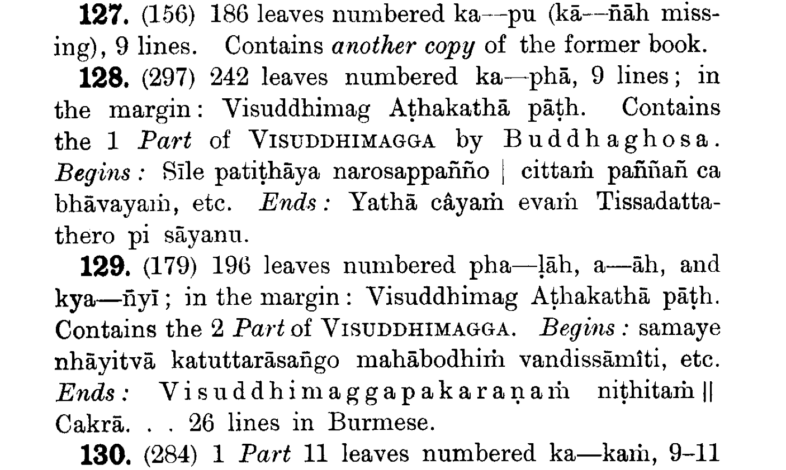

清净道论序
对于此版清净道论主要依据的手稿，Lanman 教授描述如下：
B1 是一部极佳的手稿，来自曼德勒缅甸前国王锡袍的藏书，见巴利圣典协会 1896 年刊第 40 页，编号 128-129。现属伦敦的印度事务部图书馆，并承印度事务大臣的美意借与 Warren 先生。（缅甸字母）

B2 手稿由已故的印度政府铁路咨询工程师 Henry Rigg 绅士搜罗。页面宽 19 英寸，高 2½ 英寸，有红色漆面的夹板。（缅甸字母）
C1 是已故 T.W. Rhys-Davids 教授，即巴利圣典协会创始人的私藏，由其于 1887 年购自科伦坡。页面约 17½″ × 2¼″。（僧伽罗字母）
C2 属于前英国语言协会主席、已故牧师 Richard Morris 博士。页面 21¾″ × 2½″。（僧伽罗字母）
Warren 先生将这些手稿以上述次序用罗马字母并列打印出来，其作品计 14 对开纸。此外，他准备了整本书的打字稿，其中第十七、十八及十九章已付印。其意似以 B1 为主，并给出其他三者的所有变体。
哈佛大学图书馆还有另两种僧伽罗字母的手稿，其一来自锡兰 Kalutara 已故的 Waskaduwa Subhuti 尊者，其二由 Anagarika H. Dharmapala 为已故的 Paul Carus 博士搜罗。这两本手稿，标记为 C3 及 C4，连同清净道论的两本缅文与一本僧伽罗文印刷版，在 Lanman 教授的指导下，由 Edwin W. Friend 先生将其与 Warren 先生的打字稿进行对勘。
然而，目前的这个版本并未遵从 Friend 先生的校勘，意在尽可能少地改动 Warren 的作品，且其手稿包含了所有善本。仅于一处（XXVII.170），我从新出的暹罗（印刷）版清净道论中择取了另读。在某些地方，所有 Warren 先生所据之本都需按照注疏所据之本更正，此时则从 Warren 先生的四种稿本，但他最初印行 B1 及所有变体的计划则未从。因为在很多地方，即便是 B1 的文本也有瑕疵。这些明显的手民之误或拼写差错未出校记。在缅文手稿中，ha 由于添笔而变为 mā，tha 则常作 dha，如 gantha「书」作 gandha「香」，gūtha 作 gūdha。在僧伽罗文中，n 与 ṇ 频繁地互换：vana「森林」作 vaṇa「伤口」，gahaṇa「接受」作 gahana「丛林」。列举这些文本或变体实属多余，包含并批校这些将增加本书的体积，却无益其价值。因此，最合理的文本以及那些给出可能意义的变体才作保留。一些常用词在缅文与僧伽罗文的版本中的拼法总是不同，这些词在书末以列表给出。
我发现 Warren 先生的分段不是太长就是太短，现已对其重排并编号，以方便引用并与译文对比。有些段落是一个较长故事（I.117-121）或引文（I.144-150）的子部分。虽然缅文对于段落、句号、分号的标点是一样的，它们还是相较于僧伽罗文给予我更多的帮助，后者极少有标点。三藏及其他圣典文本中的引文置于逗号中，紧随其后的方括号内的引用为巴利圣典协会版或缩略表中的其他版本的书名、卷次及页码。经集、法句、长老偈以偈颂编号引用。引用此书，即清净道论时，不加前导字母，罗马数字表示章，阿拉伯数字表示段。空括号表示引文未见，其中大部分来自已佚的古僧伽罗语义注。觉音注解的词语设为斜体，章末的跋语及页首的标题亦然。脚注中诸如 pi, ti, eva, ca 等不变词的省略也去除了前导辅音或元音的变化，例如 I.138，III.43，III.114，XI.9 中的僧伽罗文分别读作 āhāraṃ，upacchijjati，pariggahavasena，kevalaṃ。
在缅文及某些僧伽罗文手稿中，在诸如 “Cetiyapabbatavāsī Mahā-Tissatthero viya” （I.55）的句前有一标点。现代的编辑者将这些句子与其之前的句子相连。但从「破除戏论」（即中部义注）的两处例子，即 “Kāḷavallimaṇḍapavāsi-Mahā-Nāgatthero viya ca” 与 “Galambatitthavihāre vassûpagatā paññāsa bhikkhū viya” 来看，我认为这些句子分隔且开始了一个新段落。
关于觉音的生平
觉音生平的通俗叙述见「大史」第 37 章 215-246 颂（在 P.T.S. 版本中，此部分归于小史），概要如下：
出生于菩提树旁（迦耶附近），一个年轻的婆罗门异见者精通各门艺术、吠陀及各派的教理，为了辩论而在印度游行。某晚，当他到达一座佛寺并清晰地阐明了钵颠阇利的学说后，一位名叫离婆多的大长老驳斥了他的论点。反之，年轻的婆罗门却无法理解佛教的论点，并最终请求开示。
他出家成为沙弥，学习并接受三藏，因其声音与佛陀肖似故得名觉音。在他皈依的寺庙，他编写了发智论，撰写法集论的义注「殊胜义注」，并最终允诺为三藏作一略注。此时，离婆多长老说：
「（从锡兰）带来此地的唯有圣典，而无注疏，诸多法师的传统竟不可得。然而在锡兰，摩哂陀编撰的权威且极正统的注疏尚存于僧伽罗语中。去那里吧，学习并将其翻译成摩揭陀语。它们将利益众生。」
因此，觉音来到了大名王治下的锡兰。在大寺的大精勤堂，他从僧护听闻了僧伽罗语注疏及上座部传统。在他看来，这便是佛陀的教义。但当他请求遍览典籍以撰写义注时，僧团给予他两颂作为测试。他依此而写成了清净道论，一部三藏及其注疏的概要。初次宣读此作时，诸天将书隐去，并在他再次完成此作时再度上演。第三次，诸天显出先前的两份，向人们展示其才能。对比三书，无论在编排、语义、次第抑或用词上，都未有丝毫偏离于上座部之处。
僧团立即称他为真正的弥勒菩萨，并授予他义注。居住在纯正且富藏典籍的寺庙中，他将其从僧伽罗语翻译成「原始语言」，摩揭陀语。这些著作利益了无论操持何种语言的众生，上座部的所有法师均尊之为圣典。
于是，在完成其使命后，觉音返回到他的出生地，礼敬大菩提树。
上面的叙述应予考辨。觉音不可能是菩提迦耶出生的人。作为反面证据，在无数与他同时代的故事中，我们无法找到哪怕一个发生在摩揭陀的场景。在毗舍佉，这个迁徙自波吒厘子城的人的故事中（IX.64-69），起点是在锡兰，而非摩揭陀。在他所有的著作里，也没有像目击者那样对北印度的描述。更加正面的证据位于段落 “Uṇhassā ti aggisantāpassa. Tassa vanadāhâdisu sambhavo veditabbo” （I.86）。「热，即火的热，诸如发生在森林火灾等时」。这是关于以衣来防护热的注解，他的解释明显荒唐。印度的南方人不会知道，裸露的皮肤无疑会在北方的夏季里晒伤。另外，在注解中部「牧牛者经」时，他似乎相信沙渚在位于摩揭陀至毗提诃间的恒河中很常见。他所熟稔的「恒河」显然是锡兰的摩诃威利恒河，而非印度的圣河。
觉音不可能是一位婆罗门。自吠陀时代以来，每个婆罗门都应该知道著名的原人颂：
Brāhmaṇo’sya mukham āsīd
bāhū rājanyaḥ kṛtaḥ
ūrū tad asya yad vaiṣyaḥ
padbhyāṃ śūdro ajāyata.
「婆罗门是他的口，刹帝利是他的臂，吠舍是他的腿，首陀罗生自他的双足」。然而，觉音作为一位博学的婆罗门，对此却并不了解。在注解 “Bandhupādâpaccā”「梵天之足的子嗣」时，他说，「婆罗门具有这种观念：婆罗门出自梵天的口，刹帝利出自其胸，吠舍出自其脐，首陀罗出自腿，沙门出自其足底」（中部义注）。
婆罗门文献中的 “Bhrūṇahā” 一词在圣典中作 “Bhūnahu”，意为「杀胎者」。在摩犍提经（中部）中，摩犍提叱责佛陀为杀胎者，因为他不再与其妻子交合。从其注解来看，觉音显然没有理解这个词的真正含义。他释作 ‘hatavaḍḍhi, mariyādakāraka’ （杀害的增盛、规则的制定者）。最后还需引起注意的是，觉音取笑婆罗门（I.93），不过这本身倒并不确定，兴许是出于叛教者的揶揄。
对于钵颠阇利，或任何北方的传统，觉音所知甚少。钵颠阇利的所有著作中，只有术语 aṇimā 和 laghimā 被提及，而没有任何更多关于瑜伽经的内容。没有比较研究，也没有哪怕一处对钵颠阇利的著作或名称的引用。在第十七章提及了术语 “Prakṛtivāda (Sāṅkhya)” （自性论者，数论派），其中通过引用三段论的结构显示了对印度逻辑系统正理论的初步了解。关于其他各派的知识，他不会超出一个当今博学的僧伽罗比丘，或十一世纪的南方比丘（如阿耨楼陀或达摩波罗）。对于如龙树、马鸣等伟大的大乘法师的方法、原则甚至于存在，他似乎毫无所知。他确有提及史诗罗摩衍那和摩诃婆罗多，却没有对他们表现出任何熟识：「传说，指婆罗多和罗摩衍那等，去往他们的发生之地是不适当的」，「婆罗多战争和悉多的绑架，多么无益的故事」（均见长部义注）。
相应地，大史叙事中的主要部分显得像是传说。据其所说，「殊胜义注」由觉音写于印度。从文体、内容乃至导论上看，觉音是否写过此书颇为可疑。在清净道论之前完成此书更不可能，因为殊胜义注的开头几行就引用了清净道论。撰写这部分大史的人应该没有打开过殊胜义注。而觉音想要遍览注疏竟需要以概括三藏及其注疏的方式以自证其胜任，更是令人惊异。清净道论中，许多从注疏而来的引文都完整且精确。事实上，在他的所有义注中，他都说以清净道论为四尼迦耶的引导性义注。如果大史的编年者确实尝试通过检阅觉音的著作来验证关于觉音的传说的话，他读的不会超过清净道论卷首的两首母颂。若「发智论」曾存在过，那不会单单是它遭到佚失，而所有觉音的其他著作均能存世。除大史外，它在巴利文献中也从未被提及。也许，这是一本为诸天隐去却忘了还原的书！
大史的叙事保留了一个事实：即在大名王的治下（四世纪末），觉音从印度来到锡兰。这一点可由缅甸的权威予以确认，但后者说他是从直通（Thaton）前往的锡兰，出生于孟邦（Talaing）。传统包含了某种事实。我相信他是泰卢固人（Telanga），来自南印度的泰卢固，而不是缅甸的孟邦。泰卢固人曾在缅甸和印度支那广泛殖民，Talaing 一词即是其原初名称的讹传。他的出生地为 Moraṇdakheṭaka （孔雀蛋村），这从本书的跋语显然可见——称他为 “Moraṇdakheṭaka-vattabbena”，或孔雀蛋村的觉音。在印度的达罗毗荼和锡兰仍有使用这种命名的方法。在他的名声使他成为「觉音」后，他的姓氏便隐去了。值得注意的是，一向高明的 B1 的抄写者将 moraṇdakheṭaka 改为 mudantakhedaka，僧伽罗文手稿中 kheṭaka 作 ceṭaka，可能是字母的混淆。Kheṭaka 是「村庄」的梵语，在现代南方的印度方言作 Kheḍā。
某段时间，他生活在 Mayūrasuttapaṭṭana 或 Mayūrarūpapaṭṭana，如他在中部义注的跋语中所说，「我应住于 Mayūrasuttapaṭṭana 的觉友尊者的请求而作（此义注）」。我不能确认此位置及其出生地，但熟悉泰卢固地方的考古学家应当能指认：此处，至少曾有一个小小的寺庙。
下个信息来自增支部义注的跋语，「我应住于 Kañcīpura 及他处的辉护尊者的请求而作（此义注）」。
也许是由于前述的指示，他带着学习僧伽罗语注疏的明确目的来到锡兰。自阿育王去世至笈多时期，政府和宗教文化发生了巨大的动荡，锡兰却丝毫未受影响。零星散落于南印度的佛教学术，远比不上锡兰连贯的传统。 学习锡兰的这一传统，一定是觉音此行的目的。
也许在随僧护学习注疏后，为便利那些不谙僧伽罗语的读者，他产生了将其翻译成巴利语的计划。觉音将撰写相应部义注和他最后一部真正的著作——增支部义注的提议归于辉护，而觉友则提议了中部义注的撰写。但据觉音所说，这一系列的第一部，即长部义注，则是阿㝹罗陀补罗善吉祥学院的牙象长老的提议。然而，在撰写所有这些之前，觉音在僧护尊者的提议下，编撰了作为概要的引导性著作「清净道论」。其他著作均引用此书，并在事实上将其视为自身的组成部分。
所有这些事实均从跋语中搜罗而来。从其著作中也许可以得出一个推论，即他来自农耕阶层（gahapati，古译居士、长者）。他在中部义注中说：
为何佛陀先提及农耕种姓？因为他们最不骄慢，且人数最多。通常，从刹帝利家庭出家的比丘因其种姓而骄慢，从婆罗门家庭出家的因其学问而骄慢，而从低等种姓出家的则会因其出身卑微，难以在僧团中久住。但年轻的农夫们在大汗淋漓之际犹在辛勤耕耘，故而他们不骄慢 …… 从其他的家庭出家为比丘的并不很多，从农耕家庭中的较多 ……
缅甸传统认为的觉音来自直通，也许有事实依据，觉音有可能是从那里前往锡兰的。他的著作在缅甸保存的比在锡兰更好，虽然其中并未显示出对缅甸有特别的认知，他一生的最后的岁月也许就是在直通渡过的。
下面列举的偈颂取自四尼迦耶义注的导论和跋语，它们或引用了清净道论，或与觉音的生平有所关涉。
下列偈颂取自所有四尼迦耶的导论，除了末行的 “Dīghâgamanissitaṃ” ——这是属于长部义注的，在中部、相应部、增支部义注中分别是 “Majjhimasaṅgītiyā”, “Saṃyuttakanissitaṃ”, “Aṅguttaranissitaṃ”。
Sīlakathā dhutadhammā kammaṭṭhānāni c’eva sabbāni
cariyāvidhānasahito jhānasamāpattivitthāro
Sabbā ca abhiññāyo paññāsaṅkalananicchayo c’eva
khandhā dhātâyatanindriyāni ariyāni c’eva cattāri
Saccāni, paccayâkāradesanā suparisuddhanipuṇanayā,
avimuttatantimaggā vipassanābhāvanā c’eva
Iti pana sabbaṃ yasmā Visuddhimagge mayā suparisuddhaṃ
vuttaṃ, tasmā bhiyyo na taṃ idha vicārayissāmi.
Majjhe Visuddhimaggo esa catunnam pi āgamānañhi
ṭhatvā pakāsayissati tattha yathābhāsitaṃ atthaṃ
Icceva kato, tasmā tam pi gahetvāna saddhim etāya
aṭṭhakathāya vijānatha Dīghâgamanissitaṃ atthan ti.
下列偈颂取自暹罗字母印刷版的四部义注的跋语。除了增支部义注外，都以长行印行。我将其与缅文及僧伽罗文本对勘后稍作调整，以协诗律。
在长部义注末：
Āyācito Sumaṅgala-pariveṇanivāsinā thiraguṇena
Dāṭhānāgasaṅghatherena theravaṃsanvayena
Dīghâgamavarassa Dasabala-guṇagaṇaparidīpanassa aṭṭhakathaṃ
yaṃ ārabhiṃ Sumaṅgalavilāsiniṃ nāma nāmena,
Sā hi Mahā-aṭṭhakathāya sāram ādāya niṭṭhitā esā
ekâsītipamāṇāya pāḷiyā bhāṇavārehi.
Ekūnasaṭṭhimatto Visuddhimaggo pi bhāṇavārehi
atthappakāsanatthāya āgamānaṃ kato yasmā,
Tasmā tena sahâyaṃ aṭṭhakathā bhāṇavāragaṇanāya
suparimitaparicchinnaṃ cattālīsasataṃ hoti.
在中部义注末：
Āyācito sumatinā therena bhadanta-Buddhamittena
pubbe Mayūrasuttapaṭṭanamhi saddhiṃ vasantena
Paravādivādavidhaṃsanassa Majjhimanikāyaseṭṭhassa
yam ahaṃ Papañcasūdanim aṭṭhakathaṃ kātum āraddho,
Sā hi Mahā-aṭṭhakathāya sāram ādāya niṭṭhitā esā
sattuttarasatamattāya pāḷiyā bhāṇavārehi.
Ekūnasaṭṭhimatto Visuddhimaggo pi bhāṇavārehi
atthappakāsanatthāya āgamānaṃ kato yasmā,
Tasmā tena sahâyaṃ gāthāgaṇanānayena aṭṭhakathā
samadhika-chasaṭṭhisataṃ viññeyyā bhāṇavārehi.
在相应部义注末：
Bahûpakāraṃ yatinaṃ vipassanâharaṇapuññabuddhīnaṃ
Saṃyuttavaranikāyassa atthasaṃvaṇṇanaṃ kātuṃ
Saddhammassa ciraṭṭhitim abhilasamānena yā mayā nipuṇā
aṭṭhakathā āraddhā Sāratthappakāsinī nāma,
Sā hi Mahā-aṭṭhakathāya sāram ādāyo niṭṭhitā esā
aṭṭhasattatimattāya pāḷiyā bhāṇavārehi.
Ekūnasaṭṭhimatto Visuddhimaggo pi bhāṇavārehi
atthappakāsanatthāya āgamānaṃ kato yasmā,
Tasmā tena sahâyaṃ aṭṭhakathā bhāṇavāragaṇanāya
thokena aparipūraṃ sasattatiṃsatisataṃ hoti.
在增支部部义注末：
Āyācito sumatinā therena bhadanta-Jotipālena
Kañcīpurâdīsu mayā pubbe saddhiṃ vasantena,
Vara-Tambapaṇṇidīpe Mahāvihāramhi vasanakāle pi,
vātâhate viya dume palujjamānamhi saddhamme
Pāraṃ Piṭakattayasāgarassa gantvā ṭhitena subbatinā;
parisuddhâjīvenâbhiyācito Jīvakenâpi,
Dhammakathānayanipuṇehi dhammakathikehi aparimāṇehi
parikīḷitassa paṭipajjitassa (saka-)samayacitrassa
Aṭṭhakathaṃ Aṅguttara-mahānikāyassa kātum āraddho
yam ahaṃ cirakālaṭṭhitim icchanto sāsanavarassa,
Sā hi Mahā-aṭṭhakathāya sāram ādāya niṭṭhitā esā
catunavutipparimāṇāya pāḷiyā bhāṇavārehi.
Sabbâgamasaṃvaṇṇana-manoratho pūrito ca me yasmā
etāya Manorathapūraṇī ti nāmaṃ tato assā.
Ekūnasaṭṭhimatto Visuddhimaggo pi bhāṇavārehi
atthappakāsanatthāya āgamānaṃ kato yasmā,
Tasmā tena sahâyaṃ gathāgaṇanānayena aṭṭhakathā
tīh’adhikadiyaḍḍhasataṃ viññeyyā bhāṇavārānaṃ.
法喜·憍赏弥
剑桥，麻省
一九二七年九月